Slide 1封面：Optimization（优化）
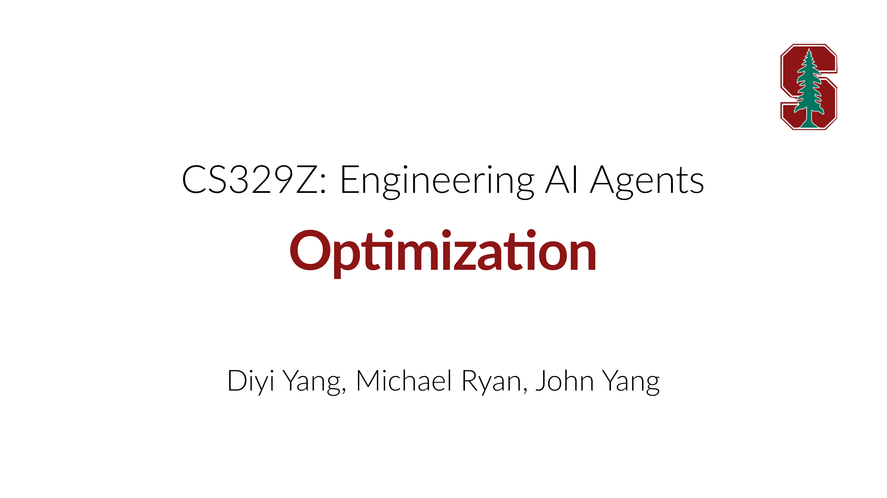
本讲封面：课程全称 CS 329Z: Engineering AI Agents，第九讲主题是 Optimization（优化）。前面几讲我们讨论了 RAG、框架、agent 设计模式、多智能体系统等「怎么搭」的问题； 这一讲回答「怎么把它变好」——如何用数据和评测驱动的优化手段系统地改进 agent 系统。
本教程是 Stanford 课程 CS 329Z: Engineering AI Agents 第九讲 《Optimization（优化）》的中文讲解。 教程按原讲义顺序逐页呈现：每张幻灯片以图片插入，并配中文讲解。全讲按讲义开头的 Lecture Overview 分为五个部分： Conditions for Optimization（优化的前提条件，5 分钟）、Context Optimization（上下文优化，25 分钟）、 Weight Optimization（权重优化，25 分钟）、Optimization with Agents（用 Agent 做优化，10 分钟）、 Which Strategy to Use（该用哪种策略，10 分钟）。 学习目标（Learning Objectives）：识别（Identify）何时对 AI 系统使用优化；描述（Describe）各种常见的上下文/权重优化算法；区分（Differentiate）每种优化策略各自适用的时机。
Announcements, Opening & Lecture Overview（Slide 1–6）

本讲封面：课程全称 CS 329Z: Engineering AI Agents，第九讲主题是 Optimization（优化）。前面几讲我们讨论了 RAG、框架、agent 设计模式、多智能体系统等「怎么搭」的问题； 这一讲回答「怎么把它变好」——如何用数据和评测驱动的优化手段系统地改进 agent 系统。
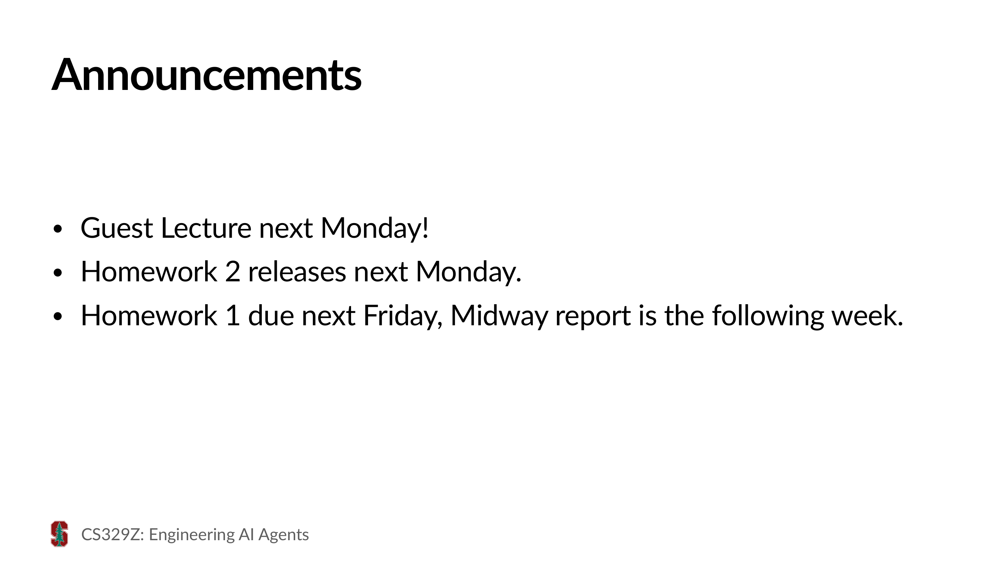
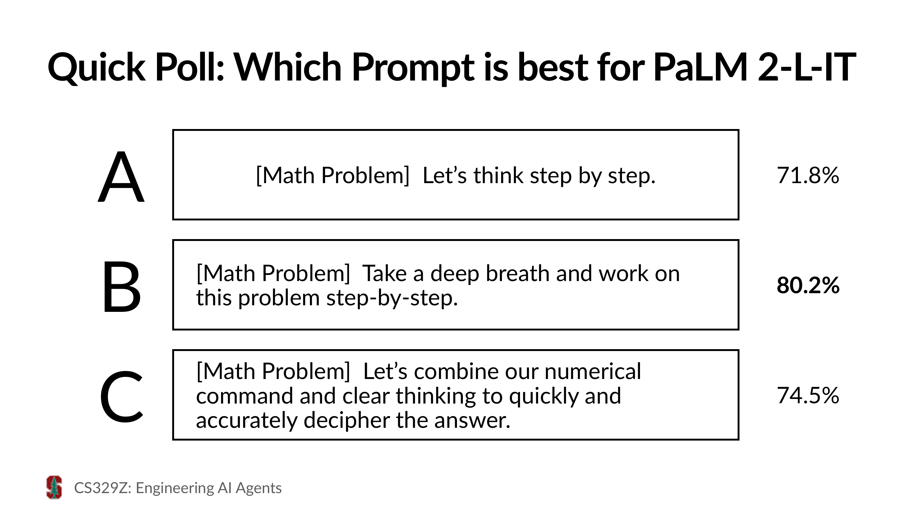
开场先做了一个课堂投票：对 PaLM 2-L-IT 模型解数学题，三个提示词哪个效果最好？选项与得票率如下：
[Math Problem] Let's think step by step. — 71.8%；[Math Problem] Take a deep breath and work on this problem step-by-step. — 80.2%；[Math Problem] Let's combine our numerical command and clear thinking to quickly and accurately decipher the answer. — 74.5%。这里的百分比正是每个提示词在 GSM8K 零样本测试上的准确率（与 Slide 25 的 OPRO 论文表格一一对应）： 一句「深呼吸，一步一步来」（Take a deep breath…）居然胜过了经典的「Let's think step by step」。 这说明提示词的效果难以凭直觉预测——这正是需要「优化」而不是「拍脑袋」的原因。
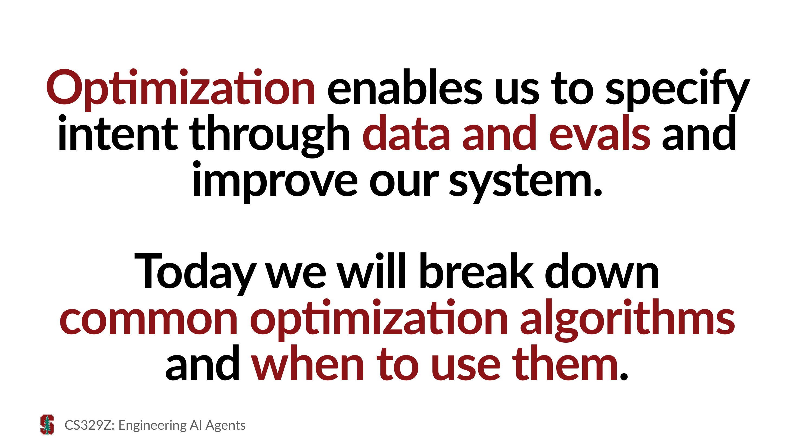
本讲的核心论点一句话：优化（Optimization）让我们能够通过数据（data）和评测（evals）来表达意图，并据此改进系统； 本讲将拆解常见的优化算法，以及各自该在什么时候使用。注意关键词：不是「手工调 prompt」，而是把「我想要什么」编码成数据和评测指标，让算法去找更好的配置。
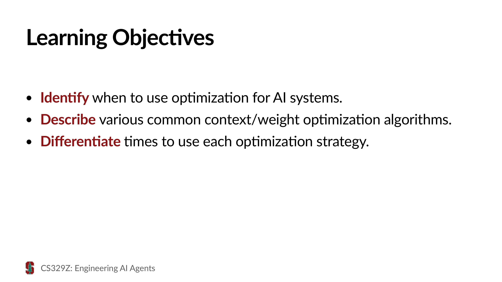
本讲的学习目标有三条，动词层层递进：
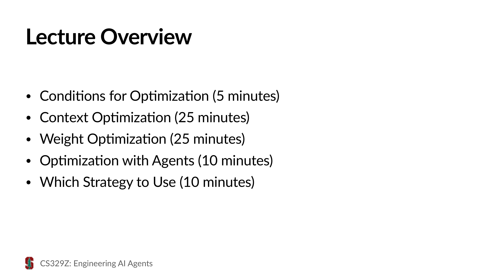
本讲的结构与时间安排：
Conditions for Optimization（Slide 7–11）
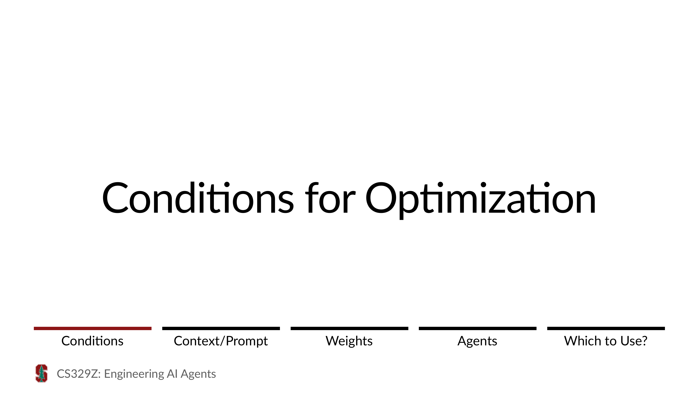
进入第一章。本讲底部一直有五个小节的进度条：Conditions（条件）、Context/Prompt（上下文/提示词）、Weights（权重）、Agents（智能体）、Which to Use?（如何选择）， 当前高亮的是第一部分「Conditions」——在动手优化之前，先回答两个问题：优化一个 AI 系统需要具备什么？什么时候值得优化？
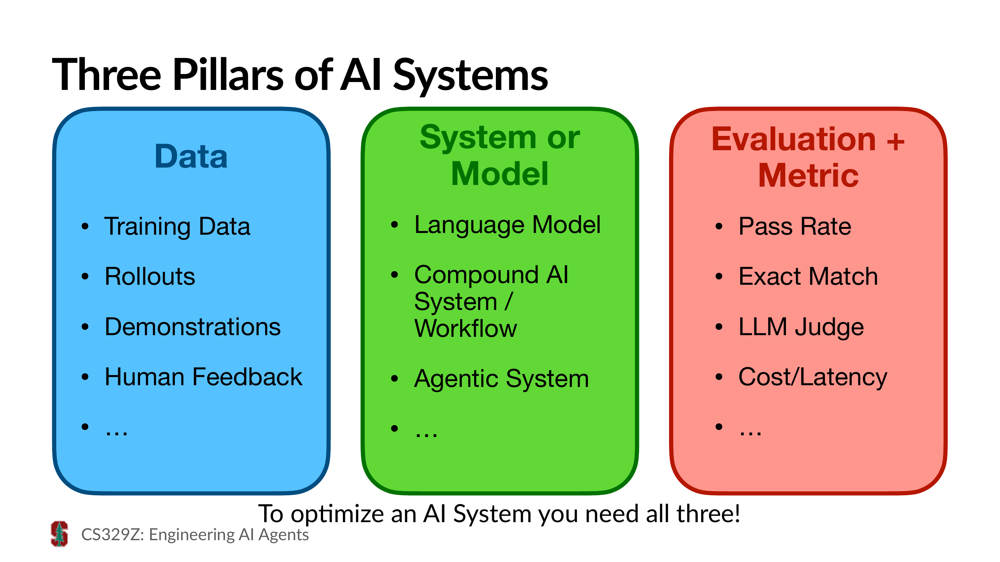
要优化一个 AI 系统，三根支柱缺一不可：
底部一句话：要优化一个 AI 系统，这三样必须同时具备！没有数据无从学起，没有系统无处施加，没有评测就不知道好坏。
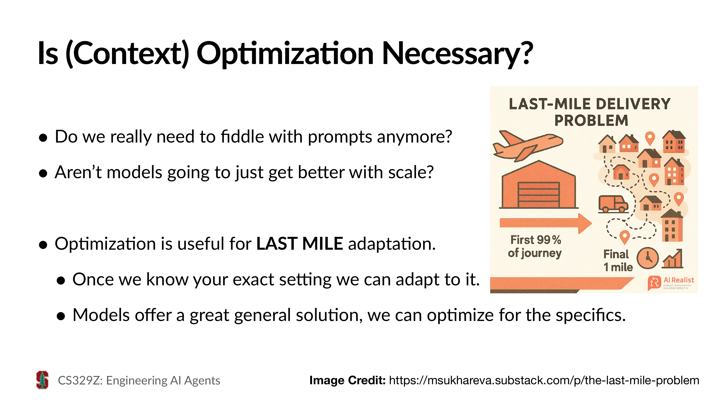
先回应一个常见质疑：既然模型随规模越来越大越来越好，我们还需要费劲调 prompt 吗？ 讲义的回答借用物流业的「最后一公里（LAST MILE）」比喻：通用大模型提供的是出色的通用解（general solution）， 但一旦你知道自己的具体场景（exact setting），就能针对细节做适配——这正是优化发挥价值的地方： 优化适用于 LAST MILE（最后一公里）适配。右侧的配送信息图形象地展示了这一点：干线运输（前 99% 的路程）可以规模化、标准化， 而最后 1 英里才是最难、最贵、最需要定制的部分。
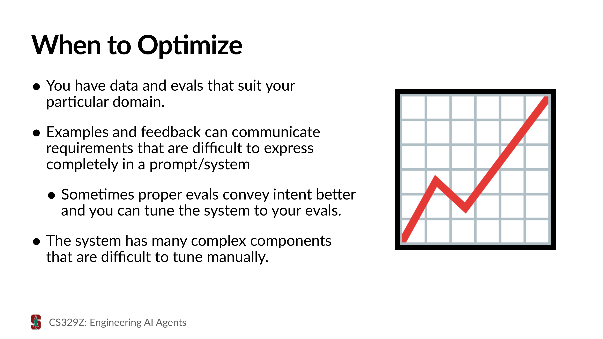
判断「该不该上优化」的三条信号：
换句话说：当「意图说不清、组件调不动」的时候，就该让优化算法登场。
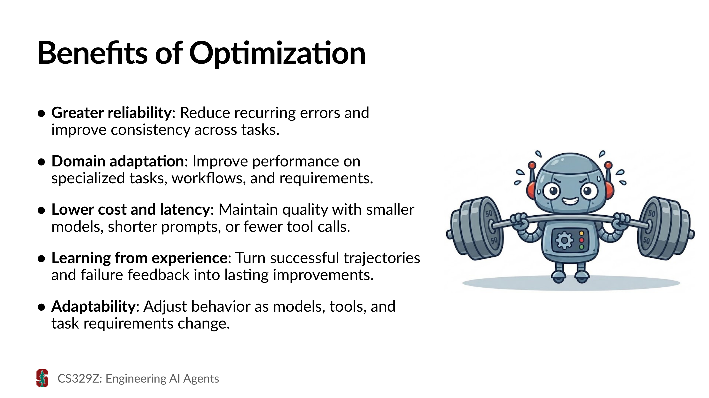
做好优化能带来五条收益：
Context Optimization（Slide 12–69）
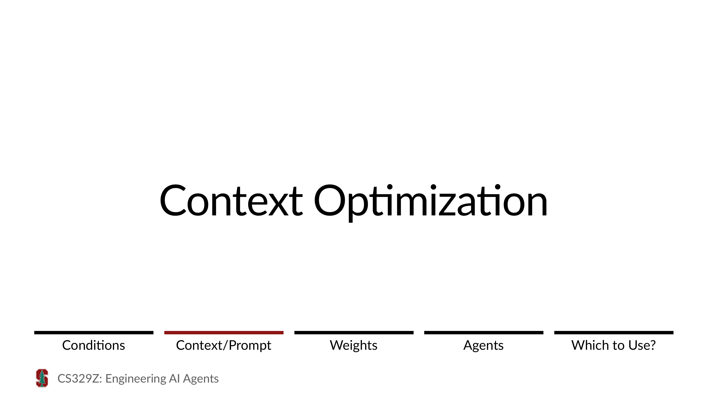
进入第二章「上下文优化」。这一章讲的是不改模型权重、只优化上下文（提示词、few-shot 示例、指令）的算法。 本章又分两个子主题：Fewshot Optimization（示例优化）与 Reflective Optimization（反思式优化）。
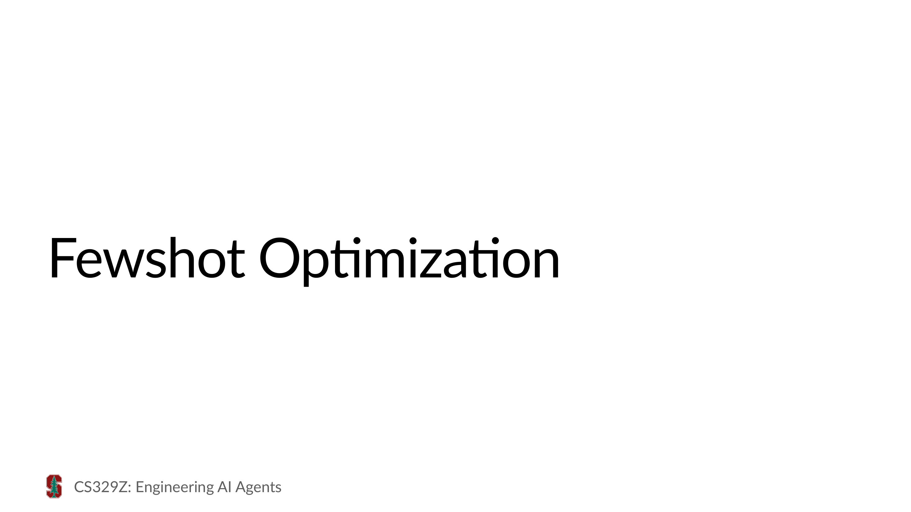
子章节「Fewshot Optimization（少样本示例优化）」：优化放进 prompt 里的那几个示例（few-shot demonstrations）——选哪些、按什么顺序放。
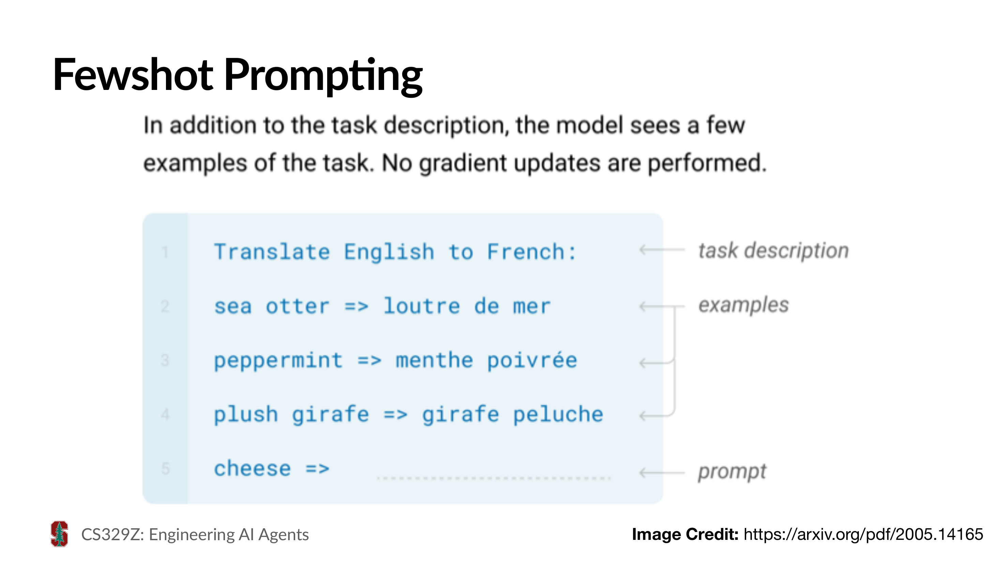
先复习概念。Few-shot prompting：在任务描述（task description）之外，模型还能看到该任务的几个示例（examples）， 例如「sea otter => loutre de mer」「cheese => …」。整个过程不做任何梯度更新（no gradient updates）—— 这正是它区别于微调的地方：所有「学习」都发生在上下文里。既然示例全在上下文里，那么选哪些示例、按什么顺序摆放就成了可优化的自由度，本章余下内容都在回答这两个问题。
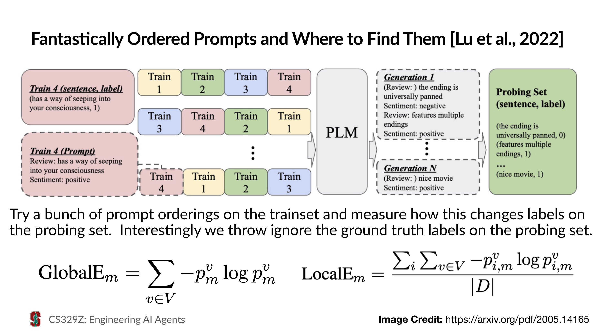
这篇论文（Lu et al., 2022）发现：few-shot 示例的排列顺序会显著影响模型输出，甚至能让准确率在接近随机到接近最优之间波动。
他们的方法是：在训练集（trainset）上尝试一堆不同的 prompt 排列顺序，然后度量每种顺序在探测集（probing set）上引发的标签变化——
有趣的是，并不使用探测集的真实标签（ground truth labels）。
图中流程：左侧 Train 1–4 组 (sentence, label) 与 (Prompt)，按不同排列顺序输入 PLM（预训练语言模型），生成不同结果，右侧用绿色框的 Probing Set (sentence, label) 评估。
论文提出两个不依赖标签的度量：GlobalE（全局熵）＝对整个探测集答案分布的熵 GlobalE_m = Σ −p·log p；
LocalE（局部熵）＝对每个探测样本的答案分布求熵再取平均。熵高＝模型对该排列「拿不准」；挑熵低的顺序即可。
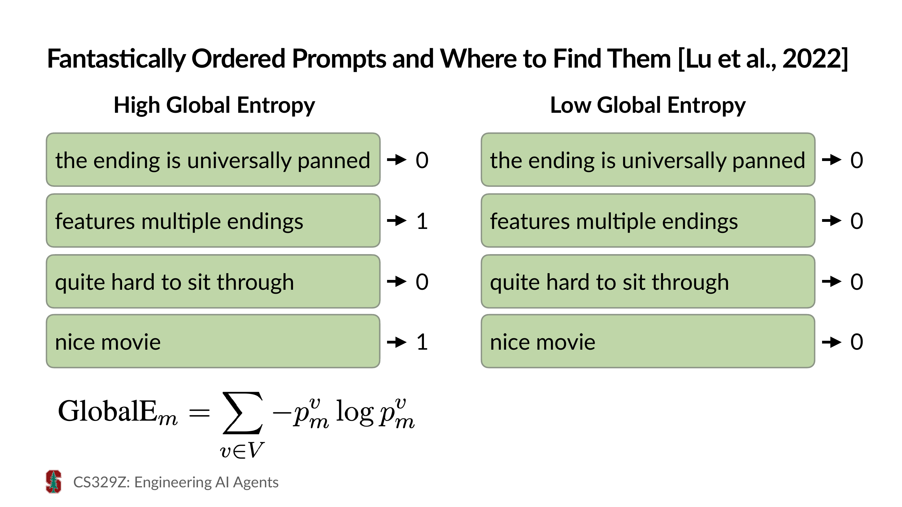
用同一批四条影评示例对比两种排列：
公式 GlobalE_m = Σ_{v∈V} −p_m^v log p_m^v 就是对标签分布求熵。直觉：应优先选择低熵的排列。
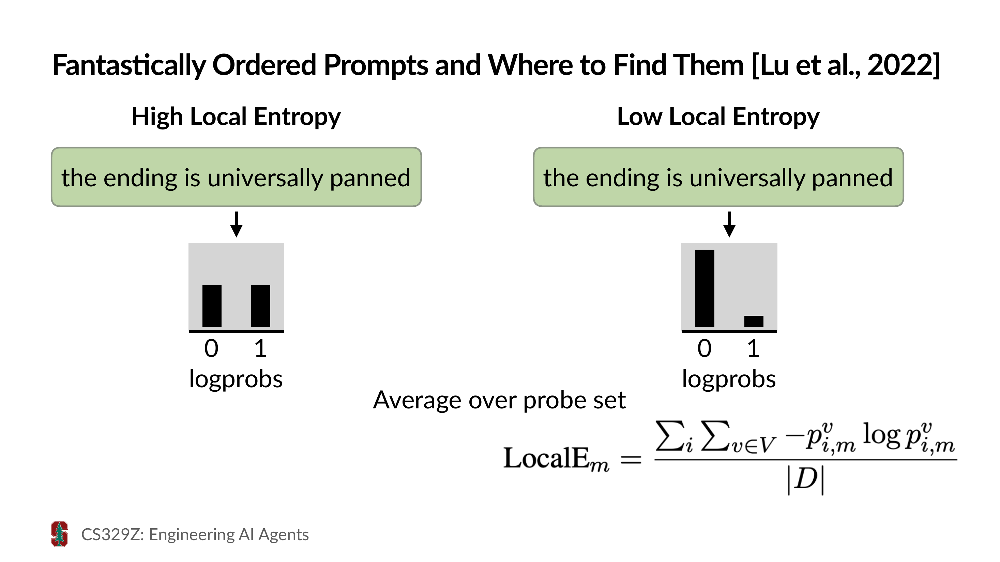
局部熵换一个视角：不问「整体标签混不混杂」，而问「单个样本上模型拿不拿得准」。每个探测样本都看一下 0/1 两类的 logprobs 小柱状图：
公式 LocalE_m = (ΣΣ −p log p) / |D| 即对所有探测样本的熵取平均。GlobalE 看全局一致性，LocalE 看逐样本置信度，两者都不需要真实标签。
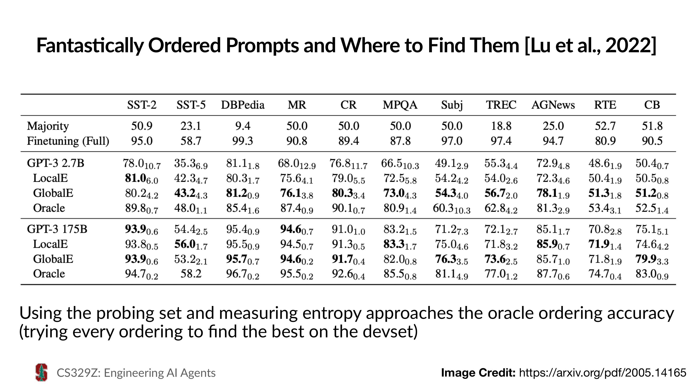
结论页：用探测集 + 熵度量来挑排列，其准确率可以逼近 Oracle 排序（Oracle＝在开发集上穷举所有排列挑最好的那种，代价极高）。 表格节选（准确率，下标为标准差）：
要点：不训练、不标注，仅靠「选个好的示例顺序」就能稳定白拿几个点的准确率，并大幅降低方差。
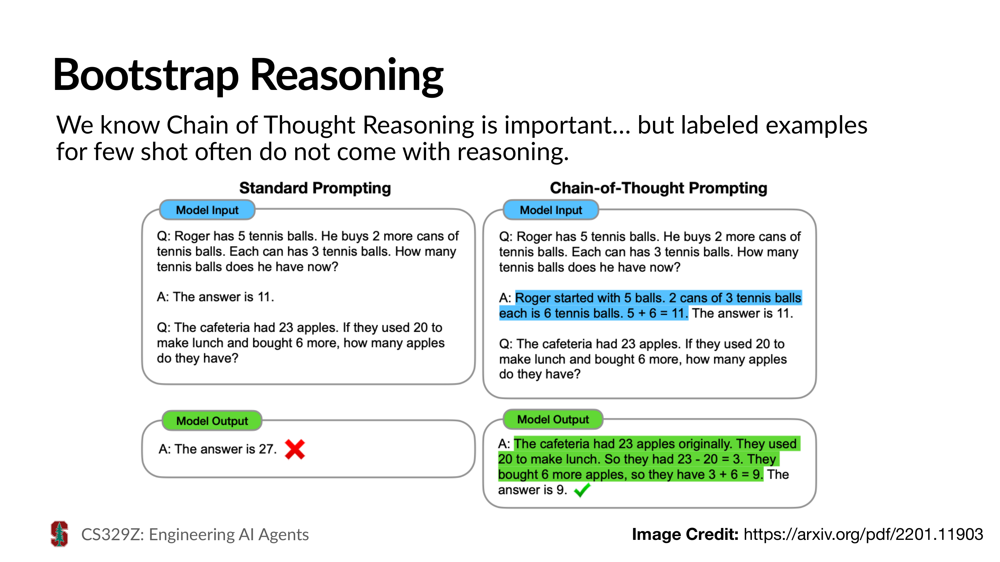
接下来解决另一个问题。我们知道 Chain-of-Thought（CoT，思维链）推理很重要—— 论文截图对比很直观：同样是「Roger 有 5 个网球，又买 2 罐每罐 3 个」「食堂 23 个苹果用掉 20 个又买 6 个」两道题， 标准提示直接给答案会错（27，应为 9），而先写推理过程（5+6=11；23−20=3，3+6=9）就能答对。 但问题在于：few-shot 的标注示例通常只带答案、不带推理过程（reasoning）——标注成本高，人写的推理还未必是模型最「顺」的推理方式。怎么办？接下来几页给出「自举（bootstrap）」方案。
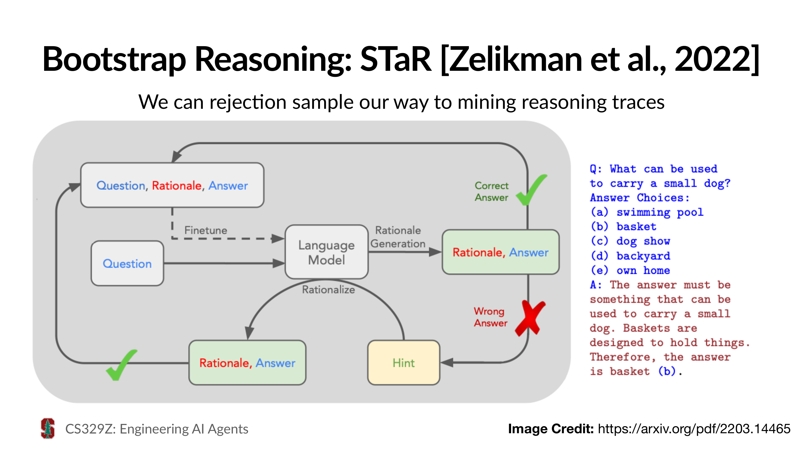
STaR（Self-Taught Reasoner）的做法：用拒绝采样（rejection sampling）来「挖」推理轨迹。 流程：Question → 语言模型生成 Rationale + Answer → 用正确性检查分流—— 答对的 (Question, Rationale, Answer) 直接进数据集，微调回流更新模型；答错的走 Rationalize 路径： 把正确答案作为提示（hint）再生成一次推理，成功后同样回收。 图中示例：「什么东西可以用来装小狗？」模型生成「篮子（basket）是用来装东西的，所以答案是 basket (b)」这样的推理。 核心思想：模型自己生成推理、用答案正确性当过滤器，循环自我改进。
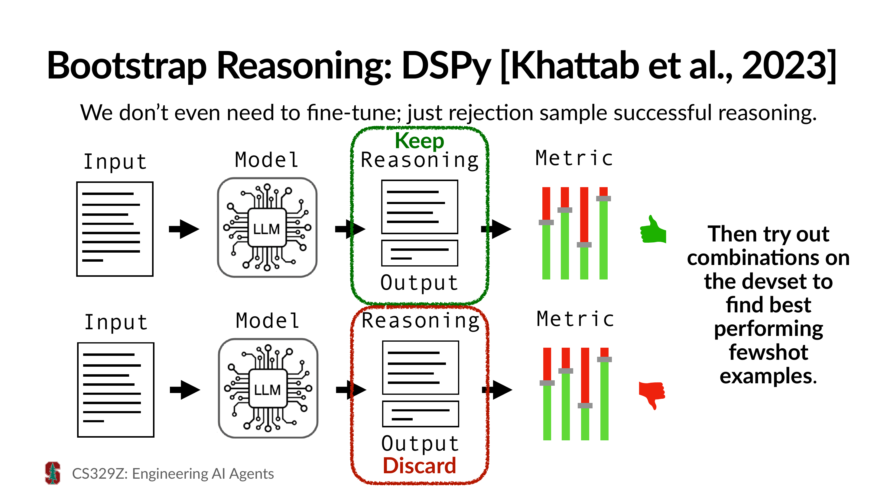
DSPy 把「自举推理」用到了上下文优化场景：我们甚至不需要微调——只要拒绝采样出成功的推理（rejection sample successful reasoning）就行。 流程图上下两行：同一个 Input 喂给 Model，产出 Reasoning+Output，交给 Metric 打分—— 得分好的 trace 保留（Keep，绿框绿拇指），得分差的丢弃（Discard，红框红拇指）。 保留下来的「输入＋模型自己的推理」就成了一条现成的 few-shot 示例。右侧补充：随后在开发集（devset）上尝试不同的示例组合，找出表现最好的那组 few-shot 示例。
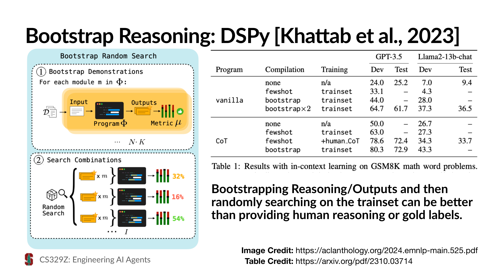
结论：自举推理/输出＋在训练集上随机搜索组合，可以胜过人工撰写的推理（human reasoning）甚至金标准标签（gold labels）。 右表为 GSM8K 数学题上的上下文学习结果（Dev / Test 准确率）：
| Program | Compilation | GPT-3.5 Dev | GPT-3.5 Test | Llama2-13b Dev | Llama2-13b Test |
|---|---|---|---|---|---|
| vanilla | none | 24.0 | 25.2 | 7.0 | 9.4 |
| fewshot | 33.1 | – | 4.3 | – | |
| bootstrap | 44.0 | – | 28.0 | – | |
| bootstrap×2 | 64.7 | 61.7 | 37.3 | 36.5 | |
| CoT | none | 50.0 | – | 26.7 | – |
| fewshot | 63.0 | – | 27.3 | – | |
| fewshot＋human_CoT | 78.6 | 72.4 | 34.3 | 33.7 | |
| bootstrap | 80.3 | 72.9 | 43.3 | – |
两个亮点：CoT＋bootstrap（80.3/72.9）超过 CoT＋人工推理（78.6/72.4）；vanilla 程序上 bootstrap×2 从 25.2 拉到 61.7（Test）， Llama2-13b 上从 9.4 拉到 36.5——对弱模型的提升尤其显著。左侧示意图展示这套流程的两步：① Bootstrap Demonstrations（每个模块跑 N×K 次过 Metric 筛选）；② Search Combinations（随机搜索给各 fewshot 组合打分）。
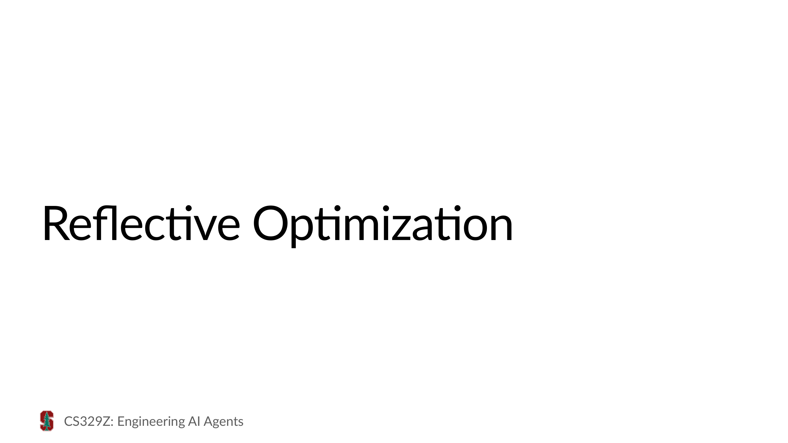
子章节「Reflective Optimization（反思式优化）」： 前面优化的是「示例」，接下来优化的是「指令（instruction）」本身——让 LLM 观察、反思、改写自己的提示词。
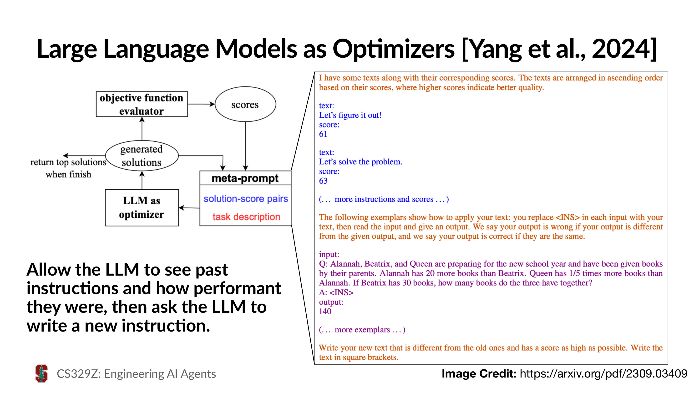
OPRO（Optimization by PROmpting）的思路：让 LLM 看到过去的指令及其各自的成绩，然后请 LLM 写一条新的指令。
左图流程：objective function evaluator 给候选解打分 → 分数与 meta-prompt（包含 solution-score pairs 与任务描述）一起喂给「LLM as optimizer」→ 生成新的候选解 → 循环（完成时取 top solutions）。
右图是 meta-prompt 实例：把历史指令按分数升序排列（如 "Let's figure it out!" 61 分、"Let's solve the problem." 63 分），
附上任务示例与 <INS> 占位说明，最后要求「写一条与旧的不同、分数尽可能高的新指令，写在方括号里」。
本质上这是把「优化」变成一个序列生成问题，用上下文里的 (解, 分数) 轨迹引导 LLM 向更优解移动。
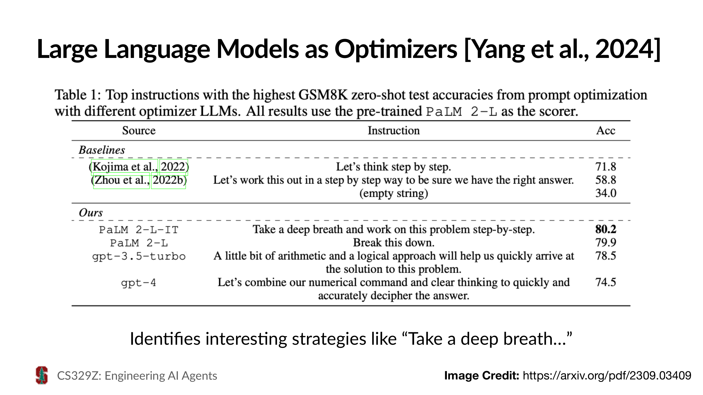
OPRO 的有趣产出：它自己发现了「Take a deep breath…」这类策略。论文 Table 1（零样本 GSM8K 准确率，scorer 为 PaLM 2-L）：
| 来源 | 指令 | Acc |
|---|---|---|
| Kojima et al., 2022 | Let's think step by step. | 71.8 |
| Zhou et al., 2022b | Let's work this out in a step by step way to be sure we have the right answer. | 58.8 |
| （空字符串） | — | 34.0 |
| PaLM 2-L-IT（Ours） | Take a deep breath and work on this problem step-by-step. | 80.2 |
| PaLM 2-L（Ours） | Break this down. | 79.9 |
| gpt-3.5-turbo（Ours） | A little bit of arithmetic and a logical approach will help us quickly arrive at the solution to this problem. | 78.5 |
| gpt-4（Ours） | Let's combine our numerical command and clear thinking to quickly and accurately decipher the answer. | 74.5 |
这就是 Slide 3 那场课堂投票的数据出处：人工直觉认为「花哨的长指令」更好，但实测简洁又能激发分步思考的指令胜出（80.2 > 74.5 > 71.8）。 这也再次说明：提示词优劣难以靠直觉判断，交给带评测回路的优化器更靠谱。
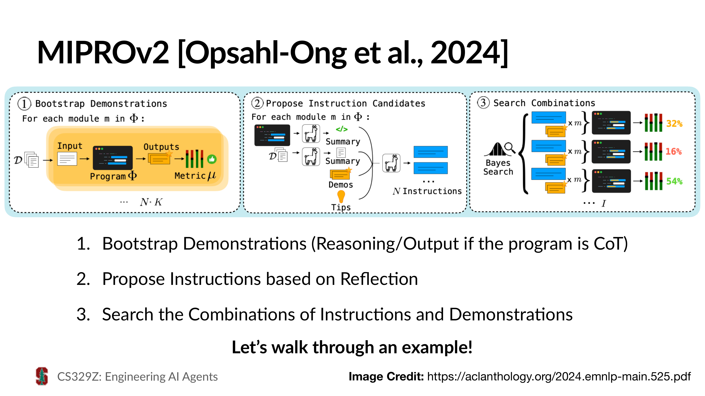
MIPROv2 把前两个子章节的方法整合成一个完整的 prompt 优化器，分三步：
接下来是一段很长的终端风格动画演示（Slide 27–63），以鸢尾花分类（classify_iris）程序为例逐步走一遍这三步。
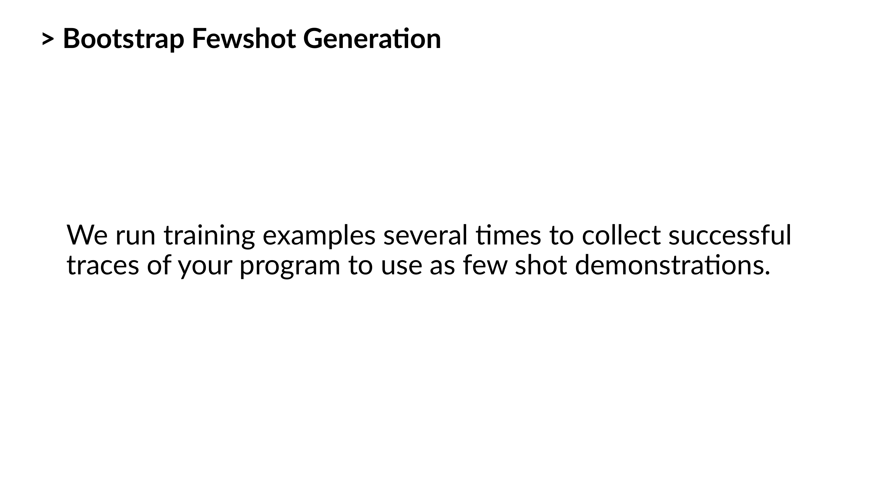
演示第一步开始。我们把训练样本在程序上跑若干次，收集成功的 trace（轨迹），作为 few-shot 示范（demonstrations）。 接下来几页（Slide 28–34）逐层搭建这个流程图。
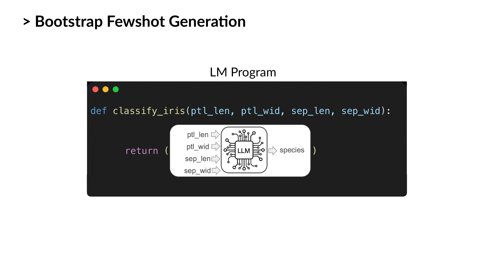
先亮出被优化的 LM Program：一个鸢尾花分类函数
classify_iris(ptl_len, ptl_wid, sep_len, sep_wid)，内部把花瓣长度/宽度、花萼长度/宽度四个特征喂给 LLM，输出物种（species）。
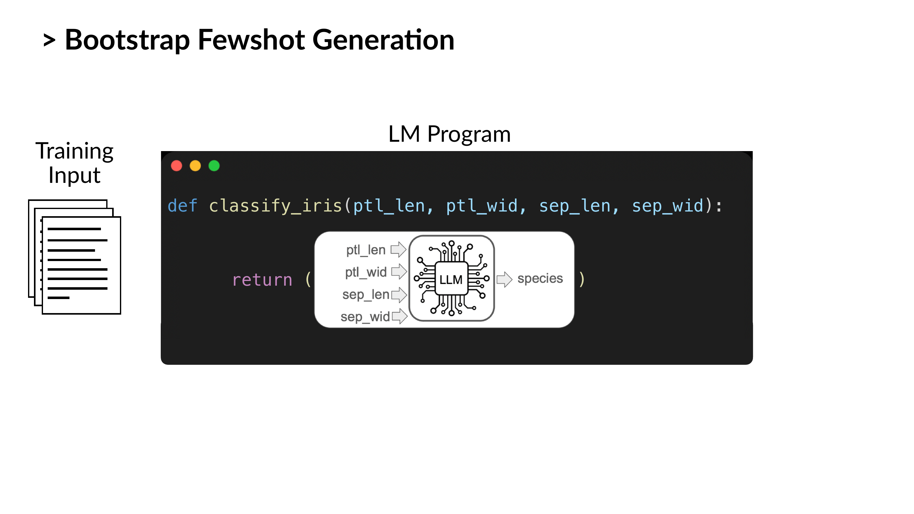
与上一张相比，左侧新增了 Training Input（训练输入）——一叠文档图标，代表多条训练样本即将被喂进程序。
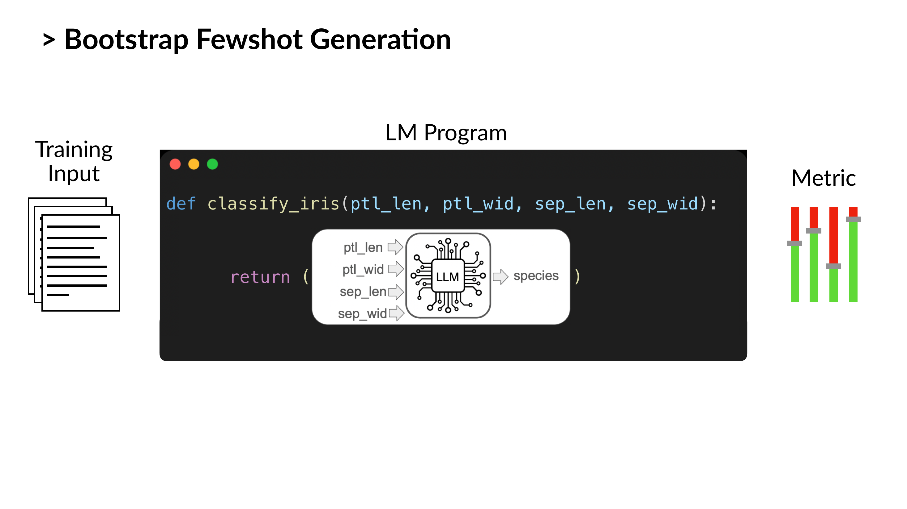
右侧新增 Metric（度量）——红绿相间的评分柱状图，用来判定程序输出好不好。三大件齐了：程序、数据、评测（呼应 Slide 8 的三支柱）。
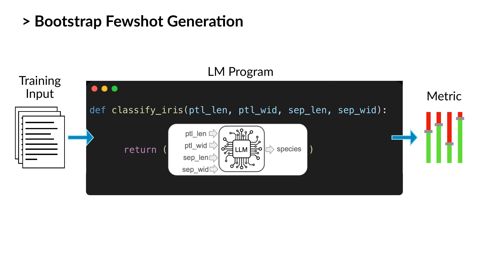
用蓝色箭头把流程连起来：训练输入 → LM Program → Metric，这就是一次完整的「跑程序＋打分」。
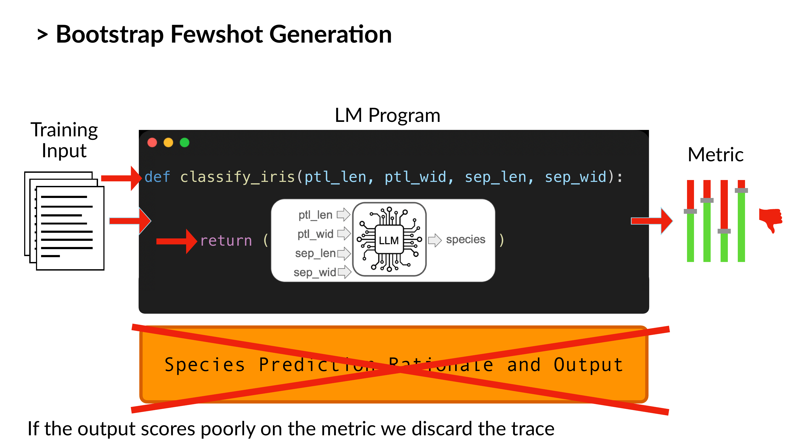
跑出来一次失败的尝试：程序下方展开的「物种预测推理与输出（Rationale and Output）」橙色高亮条被红叉划掉，Metric 旁是红色拇指朝下。 规则：如果输出在度量上得分差，就丢弃这条 trace。
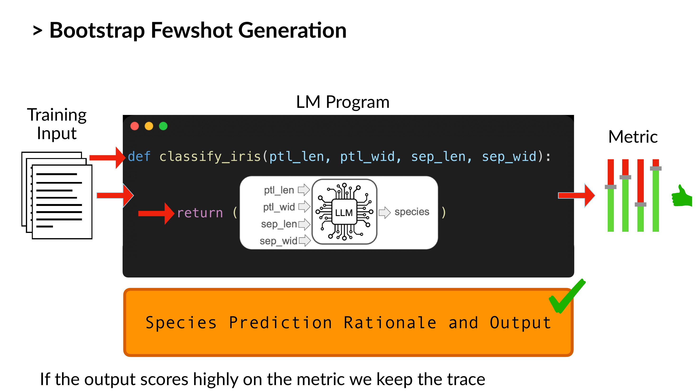
反过来的一次成功尝试：同样的流程（Training Input 多条红色箭头汇入 LM Program，程序输出指向 Metric）， 但这次「物种预测推理与输出」高亮条上打了绿色对勾，Metric 旁是绿色竖大拇指—— 如果输出得分高，就保留这条 trace。保留下来的 (输入, 推理, 输出) 就是候选 few-shot 示范。
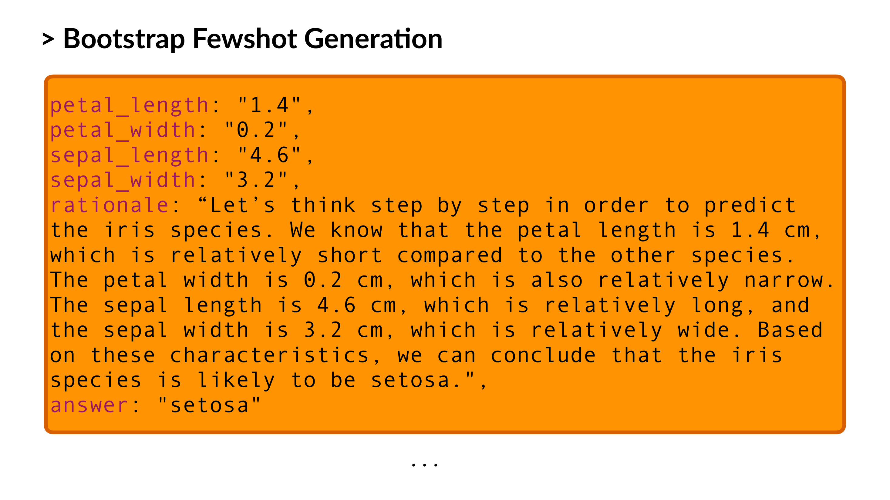
这是一条被保留的 trace 长什么样（鸢尾花示例，原文逐字）：
petal_length: "1.4", petal_width: "0.2", sepal_length: "4.6", sepal_width: "3.2", rationale: "Let's think step by step in order to predict the iris species. We know that the petal length is 1.4 cm, which is relatively short compared to the other species. The petal width is 0.2 cm, which is also relatively narrow. The sepal length is 4.6 cm, which is relatively long, and the sepal width is 3.2 cm, which is relatively wide. Based on these characteristics, we can conclude that the iris species is likely to be setosa.", answer: "setosa"
注意：这里的 rationale（推理）不是人写的，是模型自己生成的——这就是「自举推理」的含义。底部的「…」表示这样的 trace 会收集很多条。
演示第二步：有依据的指令提案（Grounded Instruction Proposal）。 我们收集若干关于你任务的细节信息（grounding），提供给负责写提示词的 proposal LM。 接下来（Slide 36–47）展示四类 grounding 信息如何汇聚成候选指令。
第一类 grounding 信息：程序感知（Program-Aware）——让提案 LM 看懂你的程序是什么。本小节动画从空白逐步添加元素。
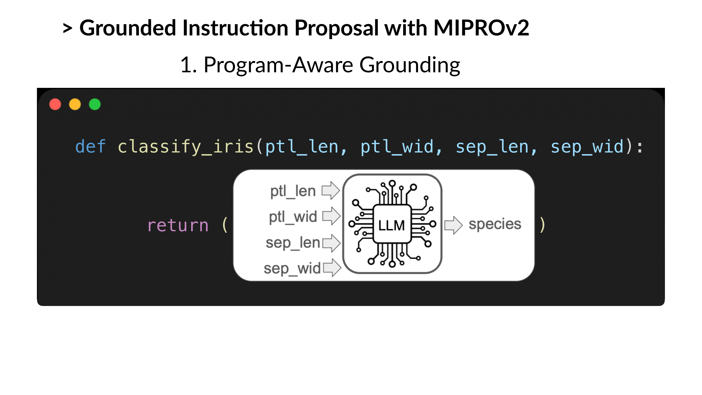
与上一张相比，新增了 LM Program 终端窗口：还是那个 classify_iris 函数。
提案 LM 首先能看到程序源代码与模块结构。
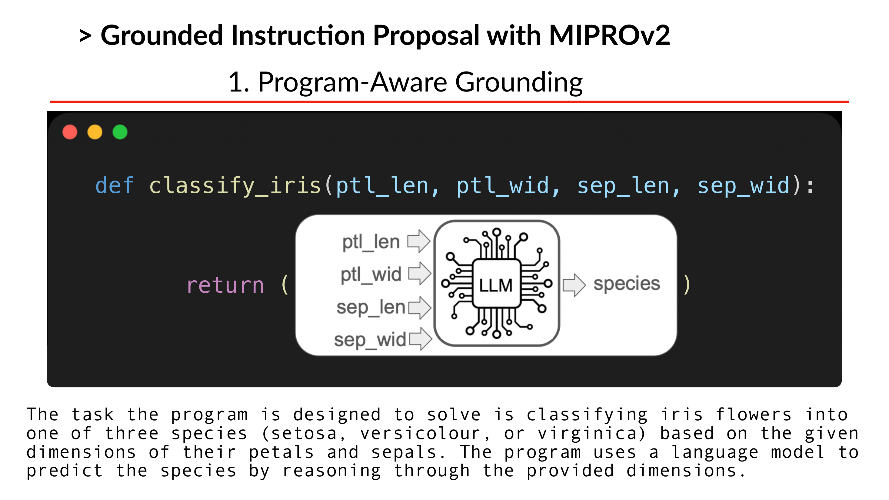
程序窗口下方（红色分隔线之后）出现了对程序的自然语言摘要（逐字）： 「该程序要解决的任务是：根据给定花瓣与花萼尺寸，把鸢尾花分为三个物种（setosa、versicolour、virginica）之一； 程序使用语言模型通过推理给定维度来预测物种。」——代码被自动总结成任务描述，供提案 LM 使用。
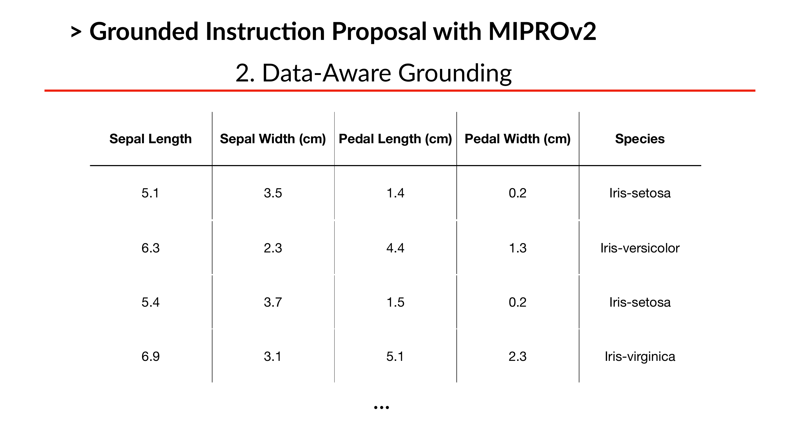
第二类 grounding 信息：数据感知（Data-Aware）。先展示数据样例（4 行，原文数值）：
| Sepal Length | Sepal Width (cm) | Pedal Length (cm) | Pedal Width (cm) | Species |
|---|---|---|---|---|
| 5.1 | 3.5 | 1.4 | 0.2 | Iris-setosa |
| 6.3 | 2.3 | 4.4 | 1.3 | Iris-versicolor |
| 5.4 | 3.7 | 1.5 | 0.2 | Iris-setosa |
| 6.9 | 3.1 | 5.1 | 2.3 | Iris-virginica |
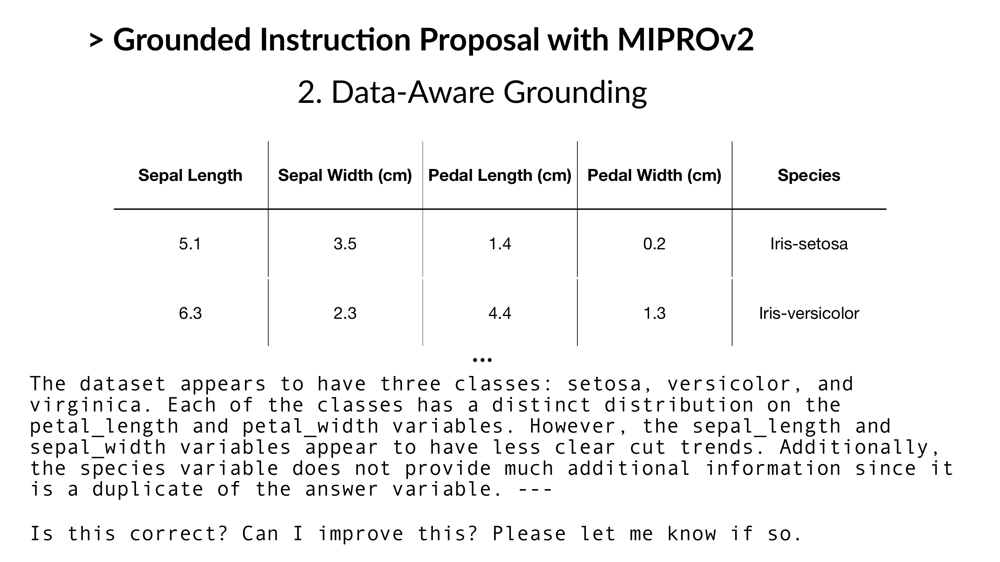
数据表下方出现自动生成的数据摘要（逐字）： 「数据集似乎有三个类：setosa、versicolor、virginica。每个类在 petal_length 与 petal_width 上分布差异明显； 而 sepal_length 与 sepal_width 上的趋势不太分明。另外 species 变量与 answer 变量重复，不提供额外信息。——这正确吗？我能改进它吗？请告诉我。」 这段摘要末尾特意留了「请让我知道如何改进」的钩子，引导提案 LM 生成更针对性的指令。
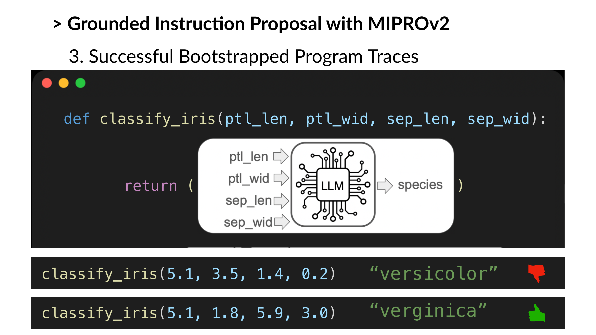
第三类 grounding 信息：成功的自举 trace。图中先给出好坏对比：
同一程序对 classify_iris(5.1, 3.5, 1.4, 0.2)（setosa 的特征）答成了 "versicolor"——红拇指朝下；
而对 classify_iris(5.1, 1.8, 5.9, 3.0) 答出 "verginica"（原文如此拼写）——绿色大拇指。
只有被度量认可的成功 trace 才会进入提案材料。
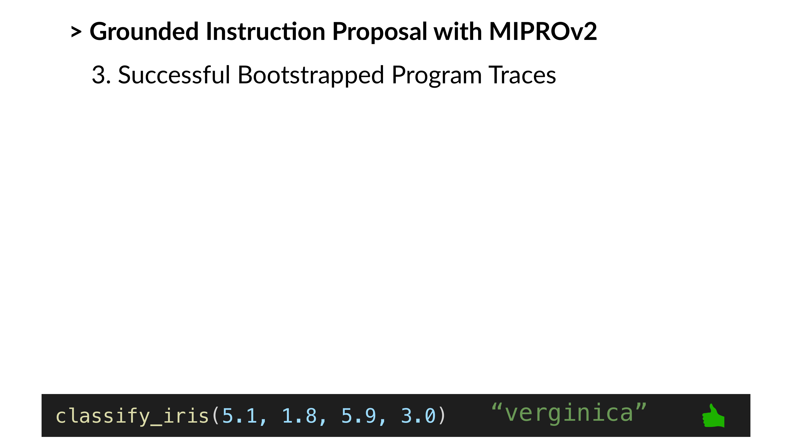
与上一张相比，程序窗口和失败 trace 都被移除，画面只保留那条成功 trace：
classify_iris(5.1, 1.8, 5.9, 3.0) → "verginica"（绿拇指）——失败样本被过滤掉了。
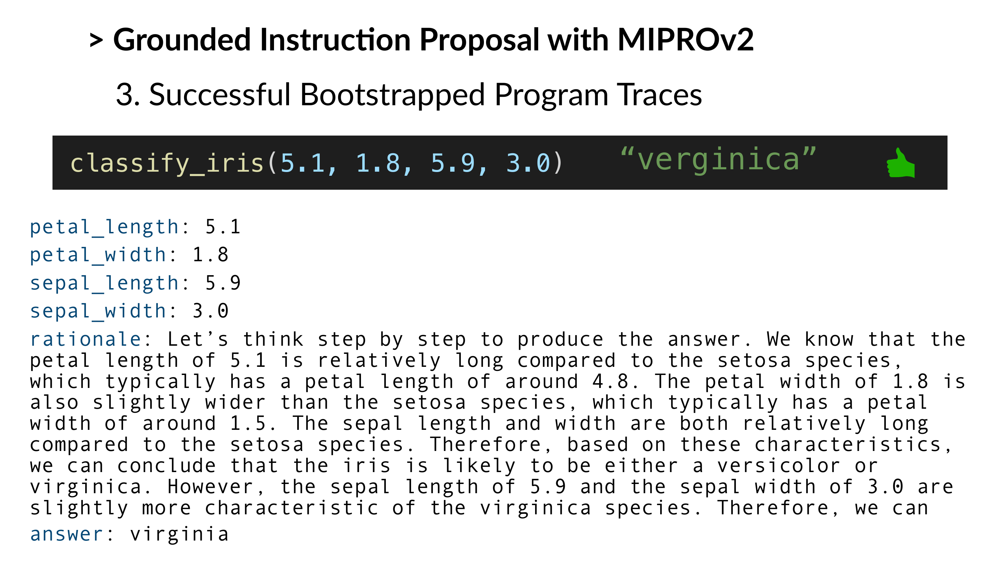
成功 trace 被完整展开（逐字要点）：
petal_length: 5.1
petal_width: 1.8
sepal_length: 5.9
sepal_width: 3.0
rationale: Let's think step by step to produce the answer. …
（5.1 相对 setosa 典型的 4.8 偏长、1.8 比 setosa 典型的 1.5 略宽……
推断为 versicolor 或 virginica，而 sepal 5.9/3.0 更接近 virginica）
answer: virginia
注意两个原文细节：推理里提到的典型数值（setosa 花瓣长约 4.8、宽约 1.5）都是模型「记忆里」的知识； 最终 answer 字段原文写作 "virginia"（与前文 "verginica" 拼写也不一致）——展示的是真实系统输出，未加修饰。
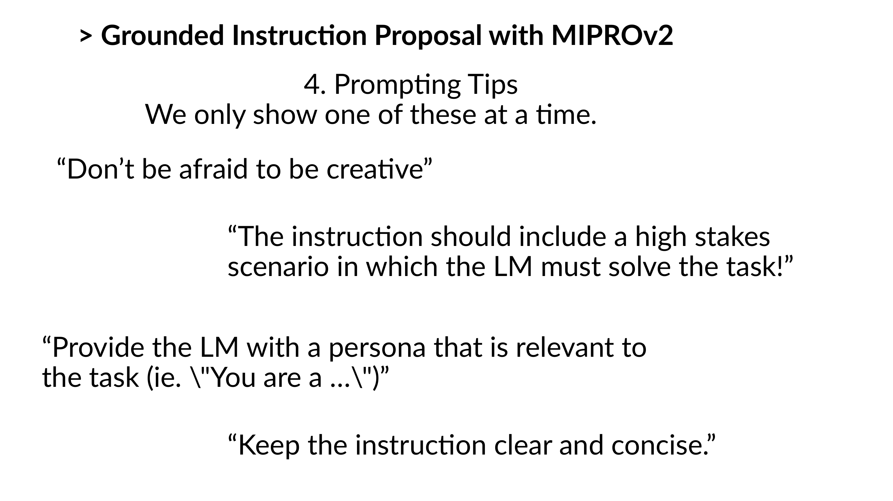
第四类 grounding 信息：提示词技巧（Prompting Tips）——每次随机向提案 LM 展示一条（原文：We only show one of these at a time），四条为：
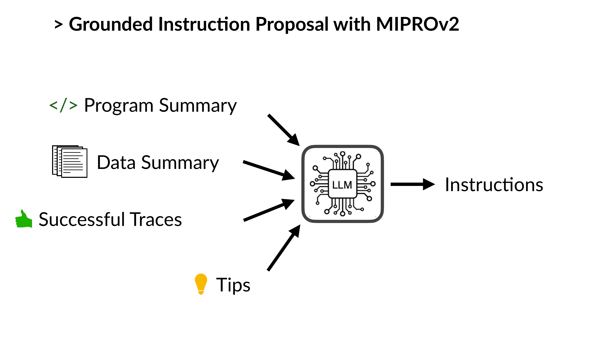
汇总图：左侧四路输入自上而下——Program Summary（程序摘要）、Data Summary（数据摘要）、Successful Traces（成功 trace）、Tips（技巧）—— 黑色箭头汇入中间的 LLM 芯片，LLM 输出 Instructions（候选指令）。 这就是「有依据的提案」的全部含义：不让 LLM 凭空写提示词，而是把程序、数据、成功经验和写作技巧都摆到它面前。
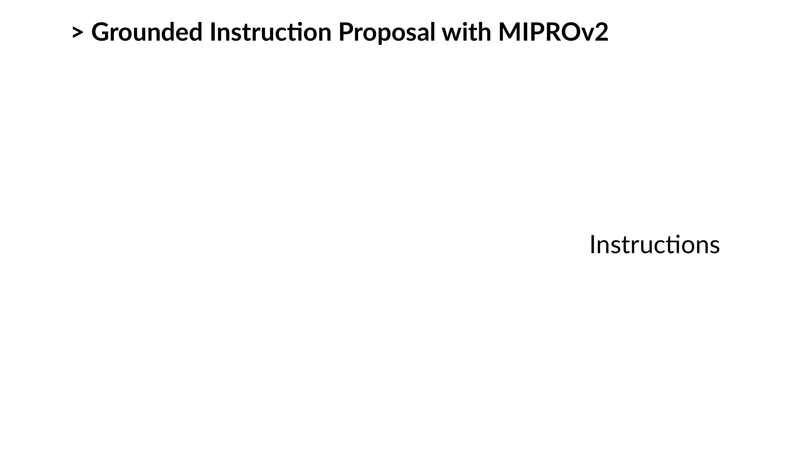
过渡页：汇总图淡出，画面只留下输出端的「Instructions」标签——注意力转到提案 LM 的产出上。
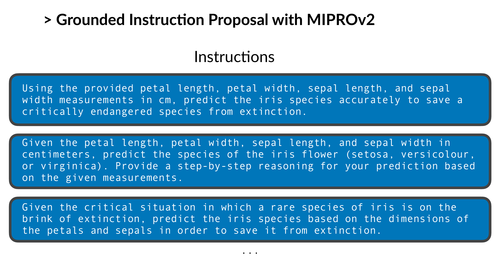
提案 LM 生成的候选指令示例（原文逐字，风格差异很大）：（1）「Using the provided petal length, petal width, sepal length, and sepal width measurements in cm, predict the iris species accurately to save a critically endangered species from extinction.」——采用了「高风险场景」tip； （2）「Given the petal length, … predict the species of the iris flower (setosa, versicolour, or virginica). Provide a step-by-step reasoning for your prediction based on the given measurements.」——清晰简洁版； （3）「Given the critical situation in which a rare species of iris is on the brink of extinction, predict the iris species … in order to save it from extinction.」——同样是濒危叙事版。 底部「…」表示这只是一个更大的候选池。
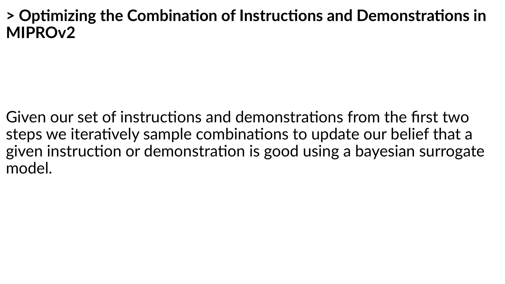
演示第三步开始：给定前两步得到的指令集合与示范集合，我们迭代地采样各种组合，用贝叶斯代理模型（Bayesian surrogate model）更新「某条指令/某组示例是好是坏」的信念（belief）。 这是 MIPROv2 的第三步——Search the Combinations。接下来（Slide 49–63）逐帧演示这个循环。
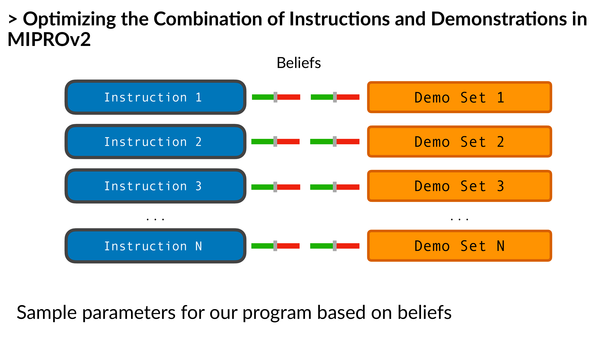
先摆出「信念面板」：左列是 N 条候选指令（Instruction 1…N），右列是 N 组候选示例集（Demo Set 1…N）， 每一项都配一条「信念量条」（绿=好、红=差，初始均匀）。底部动作：根据 beliefs 为程序采样一组参数（选一条指令＋一组示例）。
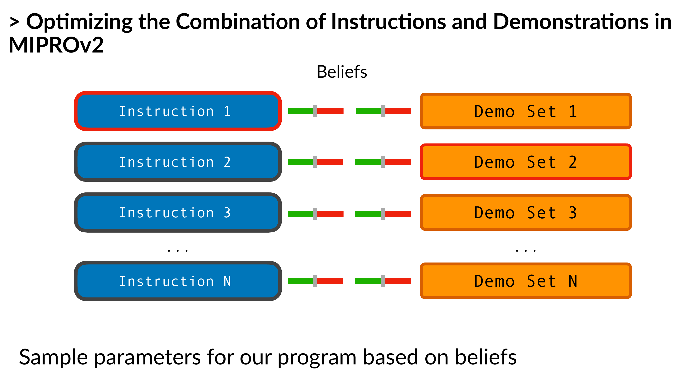
与上一张相比，Instruction 1 和 Demo Set 2 被红色边框高亮——这就是本轮按 beliefs 采样出的「指令＋示例」组合。
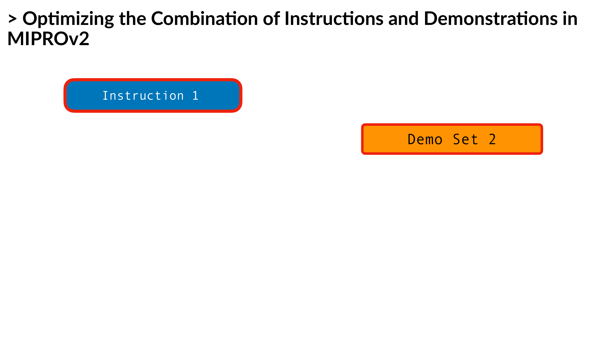
镜头拉近：其余选项全部淡出，只剩被采样的两个框——本轮要用 Instruction 1 ＋ Demo Set 2 来实例化程序。
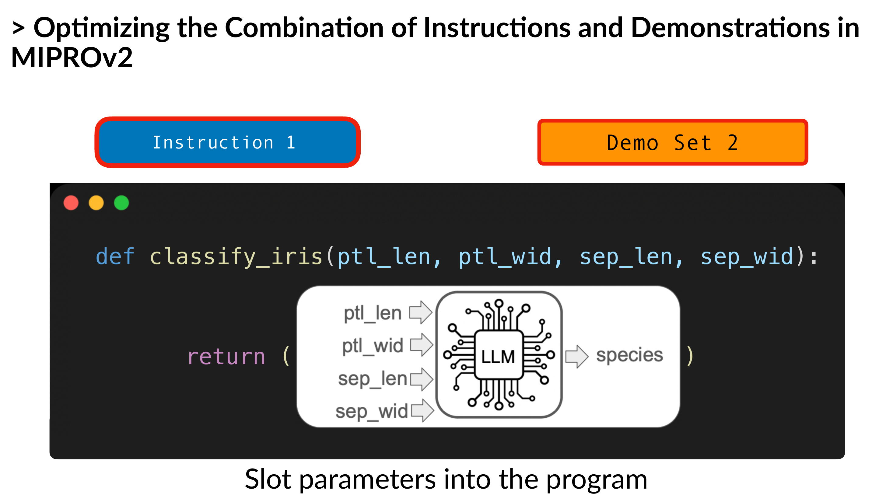
把采样的参数装配进程序：两个高亮框移到 classify_iris 终端窗口旁，准备把 Instruction 1 与 Demo Set 2 填入程序内部。
与上一张相比，终端窗口内部的白色子模块框被套上蓝＋橙双色描边——分别对应 Instruction 1（蓝）与 Demo Set 2（橙）已经填入该模块，程序进入「本轮配置」状态。
接下来评估这套配置：从训练集采样一个 minibatch（多页文档图标缩为单页）。注意底部小字：每隔几轮迭代还会做一次完整评估（full evaluation）。
把 minibatch 跑过「更新后的程序」：单页 Training Input 红色箭头汇入 LM Program（内部子模块仍是蓝橙高亮），程序输出指向 Metric——得到本轮配置的成绩。
回到信念面板：本轮组合（Instruction 1＋Demo Set 2）成绩不错——右侧出现绿色大拇指， 动作是根据 minibatch 结果更新 beliefs。
与上一张相比：红框消失，而 Instruction 1 与 Demo Set 2 的量条绿色部分明显变长（红色缩短）——好成绩让这两个组件的「好」信念被上调。
底部文字换成循环说明：重复 num_batches 次，每隔几轮做一次完整评估。接下来几帧快速演示后续几轮循环中 beliefs 的起伏。
新一轮采样了 Instruction 2＋Demo Set N，但 minibatch 成绩差——右侧红色拇指朝下， 两者的量条本就红色占多数。坏结果将下调它们的信念。
信念下调后的状态：Instruction 2 的量条红色被进一步压缩扩大，Demo Set 3 也呈红色主导——差的组合逐渐被「冷落」，采样概率下降。
本轮采样 Instruction 3＋Demo Set 2，结果好（绿拇指）：Demo Set 2 的量条绿色段占多数（再上调）， 而 Instruction 2 的绿色继续萎缩——好的越来越好、差的越来越差，代理模型逐渐逼近真实好坏分布。
多轮循环后的最终信念分布一览：Instruction 1 绿色主导（好指令），Demo Set 2、Demo Set 3 近乎全红（差示例组）—— 搜索过程就是不断用 minibatch 结果修正这组信念，最终按信念选优。
演示收官：展示一个被优化出来的模块。优化前的指令只有一句："Given the petal and sepal dimensions in cm, predict the iris species."；
优化后变成指令＋示范的组合——指令是濒危物种叙事版（「Given the critical situation in which a rare species of iris is on the brink of extinction…」），
后接一条完整的 demonstration（petal_length "1.5"、petal_width "0.1"、sepal_length "5.2"、sepal_width "4.1"，以及模型的 setosa 推理与答案）。
最终交付物就是一个「指令＋示例」的 prompt 模块。
TextGrad（文本梯度）：让 LLM 反思「这个输出哪里可以改进」，并把这条反馈像梯度一样沿系统中的各个 prompt 反向传播。
左图把整个系统画成一张计算图：Inputs（Prompt、Query、Tool Prompt）各自经过 LLM / Search Engine / Tool Caller 产出中间输出，汇入 LLM 得到 Final Output，再经 Evaluation Instruction 算出 Loss；
两条「反向弧」上写着 ∂Loss/∂Prompt = "this prompt can be improved by..."、∂Loss/∂Response = "this response can be improved by..."——
即用自然语言 criticism 代替数值梯度。右侧实例：初始化 prompt（"You will answer a reasoning question. Think step by step.…"）准确率 77.8%，
优化后 prompt（要求逐项列出数量、直接求和、校验相关性、复核计数等）准确率升到 91.9%。
GEPA（遗传式帕累托提示演化）是一个进化搜索框架，主循环为 While Budget > 0：
用一个真实程序看 GEPA 优化的是什么。PAPILLON 是一个隐私保护管线： 用户查询先经 Prompt Creator（①）改写成「不泄露隐私的请求」，发给强大的外部 API LLM（②），再由 Information Aggregator（③）汇总成最终回答。 右侧给出程序中模块 ① 和 ③ 的基线 prompt（注意标注：这是 GEPA 论文里用的 baseline prompt，不是 PAPILLON 原论文的）： ①「Given a private user query, create a privacy-preserving request for a powerful external LLM. The LLM may assist without learning private information about the user.」； ③「Respond to a user query. For inspiration, we found a potentially related request to a powerful external LLM and its response.」。 接下来两页展示 GEPA 把这些朴素 prompt 演化成了什么样。
GEPA 在 PAPILLON 上演化出的候选树：每个圆是一个候选 prompt 及其得分，红色箭头标出最优路径 0 (82.26) → 2 (90.99) → 4 (94.44) → 5 (94.67) → 11 (97.6)——最终候选 11（青色高亮）得 97.6。 五个说明框概括了 prompt 演化的五个阶段：
注意演化轨迹：不是「越改越啰嗦」，而是逐步沉淀出领域最佳实践（结构化输出、显式禁令、可审计论证）。
结论：GEPA 的反思式 prompt 演化在各项任务上全面超过基线。表格为 GPT-4.1 Mini 上的成绩（Aggregate 聚合分与相对基线提升）：
| 方法 | HotpotQA | IFBench | Hover | PUPA | AIME-2025 | LiveBench-Math | Aggregate | 提升 |
|---|---|---|---|---|---|---|---|---|
| Baseline | 38.00 | 47.79 | 46.33 | 78.57 | 49.33 | 58.20 | 53.03 | — |
| Trace (OptoPrime) | 60.33 | 51.19 | 46.00 | 74.18 | 45.33 | 60.74 | 56.30 | +3.27 |
| MIPROv2-No-Demos | 38.00 | 52.04 | 51.33 | 91.85 | 48.67 | 60.97 | 57.14 | +4.11 |
| MIPROv2 | 58.00 | 49.15 | 48.33 | 83.37 | 51.33 | 61.84 | 58.67 | +5.64 |
| TextGrad | 62.33 | 48.64 | 47.67 | 85.68 | 46.67 | 63.84 | 59.14 | +6.11 |
| GEPA | 69.00 | 52.72 | 51.67 | 94.47 | 59.33 | 64.13 | 65.22 | +12.19 |
| GEPA+Merge | 65.67 | 55.95 | 56.67 | 96.46 | 59.33 | 64.13 | 66.36 | +13.33 |
表中分隔行还给出「用 Qwen3-8B 优化、在 GPT-4.1-Mini 上评估」的 GEPA-Qwen-Opt：Aggregate 62.03（+9.00）—— 说明用一个模型优化出的 prompt 可以迁移给另一个模型。GEPA 比最强基线 TextGrad 的聚合分高出约 7 分（65.22 vs 59.14）。
上下文优化一章收束成两条 Takeaway：
Weight Optimization：SFT / RL / On-Policy Distillation（Slide 70–104）
进入第三章「权重优化」：不再只动上下文，而是直接修改模型参数。本章依次介绍三种方法： Supervised Finetuning（监督微调，SFT）、Reinforcement Learning（强化学习，RL）、 On-Policy Distillation（在策略蒸馏）。
子章节「Supervised Finetuning（监督微调）」：用「标准答案轨迹」直接训练模型。
复习语言模型训练的基本损失。交叉熵损失（Cross Entropy Loss）公式 L = −Σ_{i=1}^{V} y_i log(p_i)，逐部件标注：
y_i（蓝框）：当该 token 是数据里的真实 token 时取 1，不是则取 0（one-hot 目标）；Σ_{i=1}^{V}（红框）：对词表（vocabulary）中的每一个 token 求和；log(p_i)（绿框）：该 token 的对数概率（log probability）。一句话：SFT 就是最大化数据中真实 token 的对数似然。
复习 Instruction Finetuning（指令微调）（Flan 系列，Image Credit: arxiv.org/pdf/2210.11416）： 训练时混用多种任务形式——普通指令微调（「氮气的沸点是多少？」→ "-320.4F"）、思维链微调（「请一步步推理回答」→ 苹果题的完整推理）， 以及多任务指令微调（1.8K 个任务）；推理（Inference）时模型能泛化到未见过的任务—— 例如「Geoffrey Hinton 能和 George Washington 对话吗？先给理由再回答」，模型会推理「Hinton 生于 1947 年，Washington 卒于 1799 年，因此不能对话，答案 no」。
把 SFT 用到 agent 上的配方：
右侧流程图概括：Teacher → Roll out → Successful trajectories → Fine-tune → Student。
右侧批注给出两条要点：「让 teacher 模型执行任务，然后用它的输出做训练」；
以及「也可以想办法验证模型输出的正确性，用拒绝采样（rejection sampling）筛选后再训练」。
左侧截图展示了这样一条 teacher 轨迹（task_1087）：USER 要求「在当前目录找出所有文件名以 .example.com 结尾（忽略 beta 子目录）的文件，把命令的 stdout 和 stderr 一起捕获到指定文件」；
AGENT 执行 find . -type f -iname '*.example.com' ! -path './beta/*' > /output/command_capture.txt 2>&1，
用 wc -c 确认 48 字节，再 cat 验证内容包含 ./alpha/one.example.com 与 ./alpha/two.example.com，最后提交 "task_complete": true。
这条「思考→执行→验证→完成」的完整轨迹就是一条 SFT 训练样本。
OpenThoughts-Agent 的六阶段 SFT 数据管线（Figure 2，各阶段在论文 3.1–3.6 节独立消融）： Source Tasks（源任务）→ Mix Tasks（任务混合）→ Filter Tasks（任务过滤）→ Generate Rollouts（生成轨迹；上方 Select Teacher 选择教师）→ Filter Rollouts（轨迹过滤）→ Final Recipe（最终配方）。 页面底部预告：「敬请期待 Agent Data（智能体数据）几讲！」
结论：在强 teacher 的 rollout 上做微调确实有用！三幅折线图（图注：OT-Agent-SFT 数据集让模型在 Terminal-Bench 2.0 与 SWE-Bench Verified 100 子集上达到 SotA）：
关键信息：曲线随数据规模持续上升、未饱和——这是后面 Slide 120「权重优化更能吃数据」论点的伏笔。
FireAct 的做法（Image Credit: arxiv.org/pdf/2310.05915）：用多种 agent 推理设计模式的 GPT-4 rollout 微调 Llama2，推理时让模型自己选择怎么推理。
图 (a) 微调：Multi-task Questions（HotpotQA、StrategyQA、MMLU）× Multi-method Prompts（CoT、ReAct、Reflexion）喂给 GPT-4（可调 Tools），
收集正确的轨迹（错误的被移除），统一 reformat 成 ReAct 格式，用来微调 Llama2 得到 FLM（finetuned LM）；
图 (b) 推理：测试题（3+4+5=?）进入 FLM，输出 CoT / ReAct / Reflexion 三种卡（隐式方法选择），
简单题甚至直接「CoT in ReAct format」：Thought: 3+4+5=7+5=12. Answer is 12. Action: Finish[12]。
结论：在 GPT-4 rollout 上微调 Llama2-13B，能让它成为比「提示过的 GPT-3.5」更强的 agent。两张表（HotpotQA，EM 精确匹配）：
规律：模型越小，微调相对收益越大（7B 提升 77%，34B 只剩 25%），且微调后的 13B 小模型（34.4）能反超提示的 GPT-3.5（31.4）。
子章节「Reinforcement Learning（强化学习）」：不再模仿 teacher 的轨迹，而是让学生自己在环境里试、用奖励信号学。
RL 版配方：
右侧闭环流程图：Agent → Roll out → Trajectories → Evaluate → Rewards → Update weights → 回到 Agent。
右侧批注解释 RL 的两个机制：「外部奖励（external reward）验证任务是否成功完成」——
截图中同一道任务由学生执行，最后由 VERIFIER 用 cmp -s "$EXPECTED" "$OUTPUT"（与参考输出精确匹配）判定，
通过则给 Terminal reward 1；「同一 prompt 在组内跑若干次、若干组组成一个 batch」——
这是为下一页 GRPO 的「组相对优势」做准备。
进入具体算法。上图为 PPO（Proximal Policy Optimization），下图为 GRPO（Group Relative Policy Optimization）（图例：黄=被训练模型，蓝=冻结模型）：
给 PPO 图逐个部件贴标签（红色标注）：
注意复杂度来源：奖励是序列级的，但要为每个 token 估价值、算优势、算 KL。
PPO 代价清单第一条：内存里要同时放四个模型！（Policy Model、Reference Model、Reward Model、Value Model——对大模型来说这是巨量的显存。）
第二条：每一步要同时训练两个模型！（红框移到 Policy Model 与 Value Model 上——不仅策略在学，价值网络也要跟着学。）
第三条：还有多个（昂贵的）逐 token 计算步骤！（红框圈出 per-token KL、per-token value 与 GAE——这些逐 token 前向/反向是PPO 训练慢和贵的主要来源。）
换到 GRPO，同样贴标签：
GRPO 改进第一条：内存里只需三个模型！而且注意——「Reward Model」不一定非得是个模型（可以是规则验证器、单元测试等，呼应 Slide 81「可验证性是关键」）。
第二条：每一步只训练一个模型！（红框只剩 Policy Model——没有 value 网络要跟着训了。）
第三条：只有 KL 是逐 token 的，其余全在序列级！（奖励、优势、损失都以整条输出为单位——昂贵的逐 token 计算几乎全部消失。）
没有 value model，优势从哪来？答案写在公式里：对每条输出的奖励做组内 z-score 标准化——
Â_i = (R_i − mean) / std，减去组均值（baseline）再除以组标准差。红字结论：
「Compute the z-score for each output reward!」奖励高于组平均的输出被正强化，低于均值的被抑制。
把 GRPO 的目标函数拆开看（各部件对应彩色标注）：
J_GRPO(θ) = E[q∼P(Q), {o_i}∼π_θold(O|q)] · (1/G) Σᵢ (1/|o_i|) Σₜ [ min( (π_θ/π_θold)·Â_{i,t}, clip(π_θ/π_θold, 1−ε, 1+ε)·Â_{i,t} ) − β·D_KL[π_θ‖π_ref] ]
真实世界案例：DeepSeek-R1 的完整训练管线（四列流程，图例含 Models / Training Algorithms / Rewards / Post-Processing 等）：
可以看到 RL 与 SFT 在真实系统里是交替使用的，这为第五章 BetterTogether 的结论埋下伏笔。
选型证据：在 MATH 任务上的训练曲线（横轴 Steps 约 100–2500，纵轴 Accuracy 0.42–0.56）：
GRPO 更省（少一个 value model）且更好——这就是 DeepSeek 选择它的原因。
权重优化的第三种方法：On-Policy Distillation（在策略蒸馏）—— 结合 SFT 的「稠密信号」与 RL 的「在策略采样」，用 teacher 的 token 概率直接指导学生的采样输出。
本小节的开场比喻（底部原文）：「教练指导你亲自下过的一盘棋，比指导你只旁观的一盘棋，要有用得多。」 右图是 Chess.com 的复盘界面：本局白方第 26 步 Qe2 被标记为「!!」（brilliant，妙手），评分 0.00，面板给出后续变化与完整棋谱。 「在策略（on-policy）」的含义正来自于此：学习信号作用在学生自己生成的轨迹上，而不是别人（teacher）的棋谱上。
三种方法在同一道题（prompt："What is 5 + (2 × 3)?"）上的机制对比：
把上一页压缩成一张表：
| 方法 | Sampling（采样方式） | Reward signal（奖励/学习信号） |
|---|---|---|
| Supervised finetuning（SFT） | off-policy | dense（稠密） |
| Reinforcement learning（RL） | on-policy（在策略） | sparse（稀疏） |
| On-policy distillation（在策略蒸馏） | on-policy（在策略） | dense（稠密） |
SFT 信号稠密但 off-policy；RL 在策略但信号稀疏；只有 on-policy distillation 两项全占——这就是它高效的原因。
损失就是一个反向 KL 散度，两个彩色标注点明关键：
直觉：学生照着自己平时的路走，每走一步都问 teacher「这里你会怎么做」，把差距压到最小。
一个具体样本。题目：Beth 第 1 分钟初放 4 块冰块、第 2 分钟初放 5 块、第 3 分钟初放若干、第 4 分钟不放；煎蛋期间平均每分钟放 5 块，问第三分钟结束时锅里有多少块完整冰块？选项 A.30 B.0 C.20 D.10 E.11 F.5。 （回复开头截断。）学生的回复被逐 token 标注：解题思路是「锅里不会消失」——4 + 5 + 11 = 20，选 C. 20； 中途还明确写出「冰块在煎脆蛋的过程中不会被移除，我们只统计放入的数量」「假设冰块不融化，否则题目未提及无法计算」。 每个红色 token 都对应 teacher 概率与学生对齐程度的差异——这就是 Slide 100 那个 loss 在真实样本上的样子。
工业界实例：Qwen3 系列的后训练管线（Figure 1）分上下两层：
SFT、RL、蒸馏在真实旗舰模型训练里全部登场、各司其职。
结论页：「On-policy 蒸馏比 RL 更高效，且训练出的模型更好。」数据来自 Qwen3 技术报告 Table 21：
| Method | AIME'24 | GPQA-Diamond | GPU Hours |
|---|---|---|---|
| Off-policy distillation | 55.0% | 55.6% | Unreported（未报告） |
| ＋ Reinforcement learning | 67.6% | 61.3% | 17,920 |
| ＋ On-policy distillation | 74.4% | 63.3% | 1,800 |
最扎眼的对比在最后一列：达到更好的成绩（74.4% vs 67.6%），GPU 时数只有 RL 的约 1/10（1,800 vs 17,920）。
权重优化一章收束成一张总表：
| 方法 | 轨迹来源（Trajectory source） | 学习信号（Learning signal） | 训练目标（Training objective） |
|---|---|---|---|
| Supervised fine-tuning | 收集的示范（Collected demonstrations） | 参考 token 与动作 | 最大化示范行为的似然 |
| Reinforcement learning | 学生自生成轨迹 | 任务奖励（Task rewards） | 最大化期望奖励 |
| On-policy distillation | 学生自生成轨迹 | teacher 在学生生成前缀上的 token 概率 | 在学生自生成轨迹上最小化与 teacher 的散度 |
记忆口诀：SFT 学「别人的路」，RL 学「自己的奖励」，OPD 在「自己的路上学老师」。
Optimization with Agents（Slide 105–116）
进入第四章：换一个视角——让 agent 本身充当优化器：给它环境、日志与执行能力，让它自己迭代改进。本章两个案例：Self-Improvement（自我改进）与 Auto-Research（自动化研究）。
子章节「Self Improvement（自我改进）」：agent 优化的是它自己——自己的代码、自己的 harness。
Darwin Gödel Machine（DGM，达尔文·哥德尔机）的机制（底部原文）：「按与性能成正比、与子代数量成反比的方式选择父代进行自我修改。」 流程图拆解：
两幅图展示 DGM 的搜索过程：
注意：分数的跃升都对应 agent 给自己写的新工具/新能力——它在改自己的 harness。
结论（底部原文）：「自我改进（父代修改自己而非由 meta-agent 修改）与探索（可以回退到先前的父代、而不是总在最新版本上叠加）两者都至关重要。」 消融曲线：
去掉任何一个设计都会显著变差——「能改自己」＋「能回头」缺一不可。
Meta-Harness 的思路（底部原文）：「让一个 meta agent 看到全部过往经验，由它决定下一步改什么。」 流程：①文件系统（Filesystem w/ All Experience，目录 1、2、…）保存一切历史 → meta agent 以「Maximize（最大化性能）」为目标提出 harness 代码（Propose Harness Code）→ harness 与 LLM 组成 Harness+LLM 在 Tasks 数据库上评估 → 每次评估的产出（Proposed Code / Reasoning Traces / Eval Score）→ ③ 把全部日志存回文件系统，进入下一轮。
结论（底部原文）：「随着时间推移，meta-agent 能利用这些上下文为 agent 构建越来越好的 harness，去解决面向特定领域的问题。」两幅图：
Meta-Harness 优化出的 harness 甚至超过了人工写的版本与知名 agent 框架。
子章节「Auto Research（自动化研究：优化任何东西）」——同样的循环可以泛化到「任何跑在软件上的东西」。
Auto-Research 的循环（底部原文）：「给 agent 代码仓库的访问权。让它头脑风暴、写一个改动。跑实验看改动是否正向。指标提升就保留并在其上继续，否则回滚。记录发现。」
流程图：read context → propose change → commit and train → 判断 metrics improved?——
yes 走绿框 accept (keep change)，no 走红框 revert (git reset)，两路汇入 log to results.tsv，黑色箭头 repeat 回到起点。
这是 Karpathy 的 autoresearch 仓库里驱动整个循环的 prompt（"The experiment loop"，要点）：实验在专用分支上跑（如 autoresearch/mar5）；LOOP FOREVER：
train.py；git commit；uv run train.py > run.log 2>&1（重定向一切输出——不要用 tee、别让输出淹没了上下文）；grep "^val_bpb:\|^peak_vram_mb:" run.log；tail -n 50 run.log 读堆栈尝试修复，几次不行就放弃；收尾段：「你是一个完全自主的研究者，尝试、保留或丢弃，并推进分支以持续迭代。如果感觉卡住了可以回退，但应该极其克制地这么做（如果非要的话）。」
真实跑出来的结果：83 次实验，只保留 15 次改进（图题）。横轴 Experiment #（0–83），纵轴 Validation BPB（越低越好，0.975–1.000）； 灰点为 discarded（丢弃），绿大点为 kept（保留），绿色阶梯线为 running best。保留的改进按时间序包括： baseline（约 0.998）→「总 batch 524K 减半为 262K（更多步数）」（约 0.991）→「warmdown 0.5→0.7」→「加 5% warmup」→「depth 9、aspect ratio 57」→「x0 lambda init 0.1→0.05」→「unembedding LR 0.004→0.008」→「S5SSL 窗口模式（更多滑窗）」→「短窗口 1/4、1/8 上下文（256 tokens）」→「embedding LR 0.6→0.8」→「RoPE base 10000→50000→100000→200000（三次递进）」→「随机种子 42→137」（约 0.9775）。 大量灰点散布在阶梯线上方——绝大多数尝试无效，但循环保证了整体单调向下（变好）。
本章三条结论：
Which Strategy to Use（Slide 117–122）
进入最后一章：把前面所有方法放在一起——上下文优化、权重优化、agent 优化，到底该用哪个？
结论（底部原文）：「有时最好的做法是：先优化 prompt，再优化权重，然后再优化一轮 prompt。」
左侧 Algorithm 1 伪代码非常直白：Π′ ← OptimizePrompts(Φ, X, μ) → Θ′ ← FinetuneWeights(Φ⟨Θ,Π′⟩, X, μ) → Π″ ← OptimizePrompts(Φ⟨Θ′,Π′⟩, X, μ)——prompt 与权重交替迭代。
右侧结果表（HotPotQA / GSM8K / Iris，三个 7–8B 模型）选摘：
要点：prompt 优化与权重优化不是二选一，交替进行往往最强。
结论（底部原文）：「Prompt 优化的样本效率（sample-efficient）远高于 RL。」两幅图（横轴都是 rollout 数量 0–25000，圆点=验证性能，星形=测试集性能）：
GEPA 用不到 GRPO 几十分之一的 rollout 拿到更高的分——当环境交互昂贵时这是决定性优势。
硬币的另一面（底部原文）：「权重优化更吃数据（data hungry），但能随着成千上万的样本持续变强。」三幅图与 Slide 77 同源：
与 Slide 119 对读：prompt 优化省样本但天花板出现早；权重优化前期性价比低，但数据管够时上限更高。
三个选上下文优化的理由：
三个选权重优化的理由：
Summary（Slide 123–125）

全课进入总结。一个有趣的小细节：本页底部进度条显示的并非本讲的五节，而是下一讲「Multi-Agent Systems」的章节条（SAS vs MAS、Orchestration、Communication、Coordination、Failure Modes，均未高亮）——应为模板复用产生的「下一讲预告」式残留。
本讲覆盖的五块内容（全部打勾）：
结束页：「下周一客座讲座！」（Monday 红色加粗强调），横幅是 TERMINAL-BENCH 的 logo——呼应 Slide 2 的公告，客座讲座将围绕 Terminal-Bench 展开。第九讲到此结束。
本讲引用的论文与资料